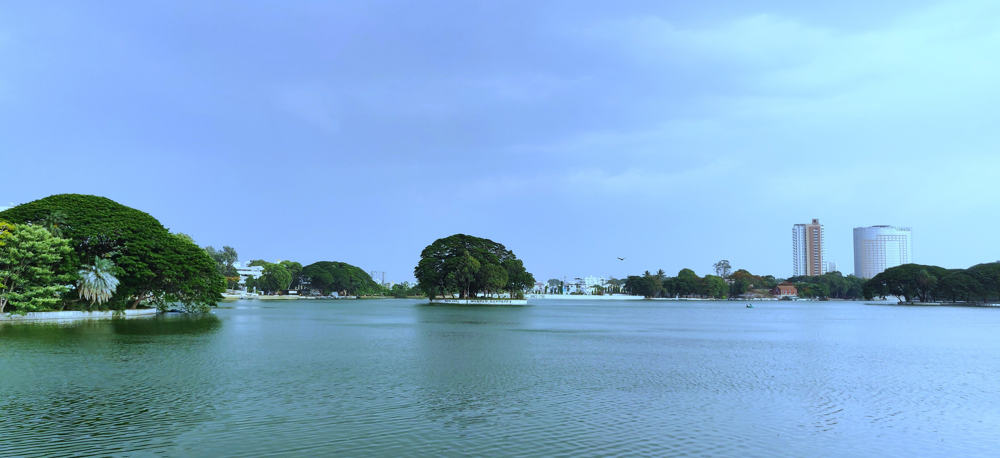

Lakes of Bangalore
Home
Lakes
Water Hyacinth
Community

Welcome to Lakes of Bangalore! A platform that aims to empower communities to protect water resources through real-time monitoring, data collection and mapping of invasive water hyacinth.